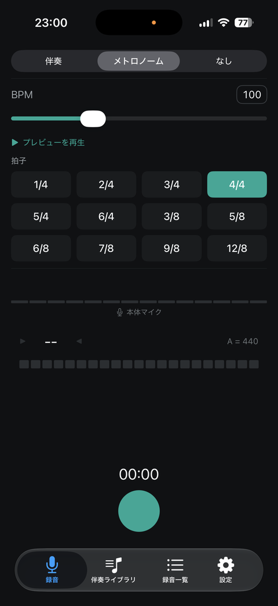
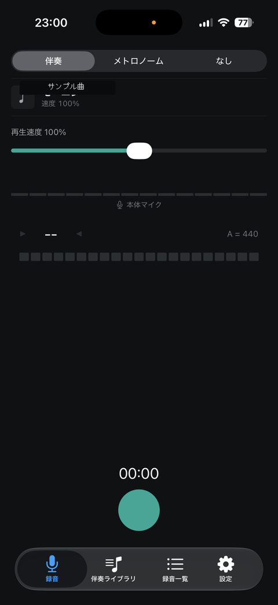
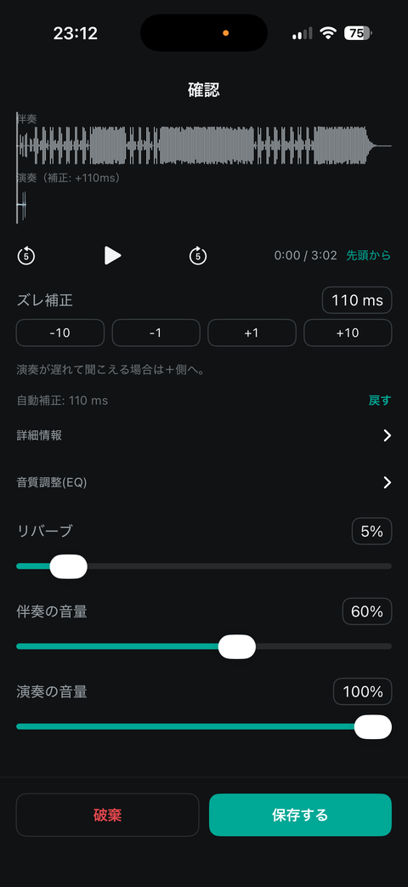
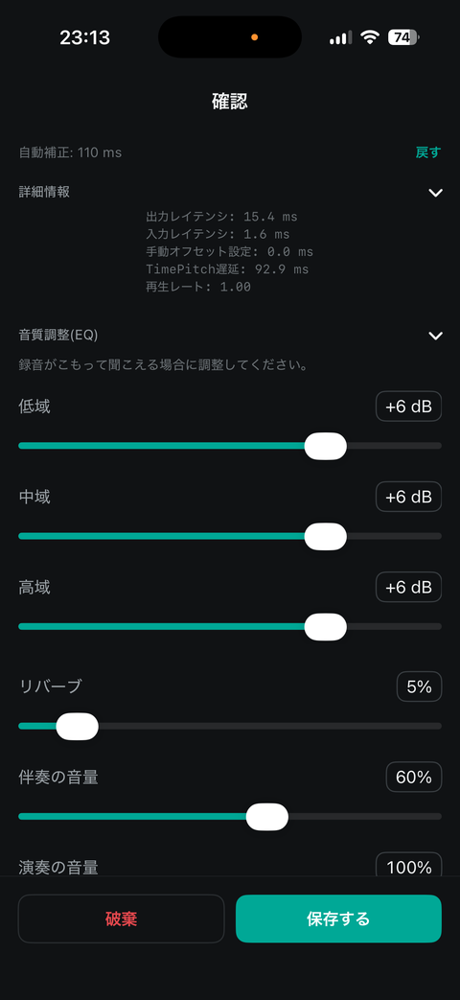
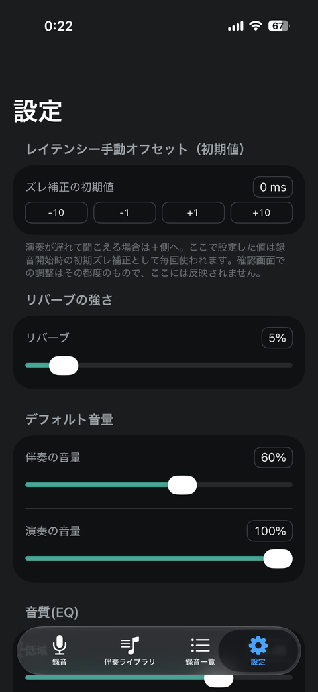

User Guide
Last updated: July 19, 2026
Mimu helps you practice an instrument by recording yourself, listening back, and refining your performance. Use the four tabs at the bottom of the screen — Record, Accompaniment Library, List, and Settings — to build your practice routine.
1Recording
The "Record" tab lets you choose from three backing modes.
- Accompaniment: pick a track and adjust its playback speed while you record along with it
- Metronome: set a BPM and time signature (a wide range from 1/4 to 12/8 is supported) and record along with a click track. Use "Play Preview" to hear it before you start
- None: record just your performance, with no backing track
The active microphone (such as the built-in mic) is shown at the bottom of the screen, along with a real-time tuner that detects the pitch of your playing and displays it as a note name (like "C4" or "E4"), referenced to A = 440Hz. Tap the round button to start recording.


2Reviewing Your Take
Once you stop recording, you'll land on the review screen.
- Both the "Accompaniment" and "Performance" waveforms are shown so you can compare them visually
- Play back your take with 5-second skip controls
- Timing correction: fine-tune the offset between the accompaniment and your recording, starting from an auto-detected value and adjusting manually in -10/-1/+1/+10 ms steps. If your performance sounds delayed, adjust toward +. Tap "Revert" to go back to the auto-detected value
- Details: view deeper technical info, including output/input latency, manual offset, TimePitch delay, and playback rate
- EQ: adjust low, mid, and high bands independently. If a recording sounds muffled, try lowering the low band or boosting the high band for more clarity
- You can also adjust reverb, accompaniment volume, and performance volume on this screen
- Tap "Save" to keep the take, or "Discard" to try again


3Accompaniment Library
Add and manage your own accompaniment tracks here.
- Organized into three sub-tabs: "Albums," "Playlists," and "All Songs"
- Every sub-tab is searchable
- Use the button in the top-right corner to import tracks — you can add audio from your device's Files app or Music app
4Recording List
Browse and play back all your saved recordings — useful for reviewing your practice history over time.
5Settings
Set default values for the adjustments you make on the review screen, so you don't have to tweak them every time.
- Default timing correction (0 ms by default, adjustable in -10/-1/+1/+10 ms steps). This value is applied as the starting offset for your next recording — adjustments made on the review screen are one-off and aren't saved here
- Default reverb level
- Default volume levels (accompaniment and performance)
- Default EQ settings (low, mid, and high bands)

6Send Feedback
You can send feedback, including screenshots, directly from the TestFlight app. If something isn't working, or you'd like to reach out directly, contact: